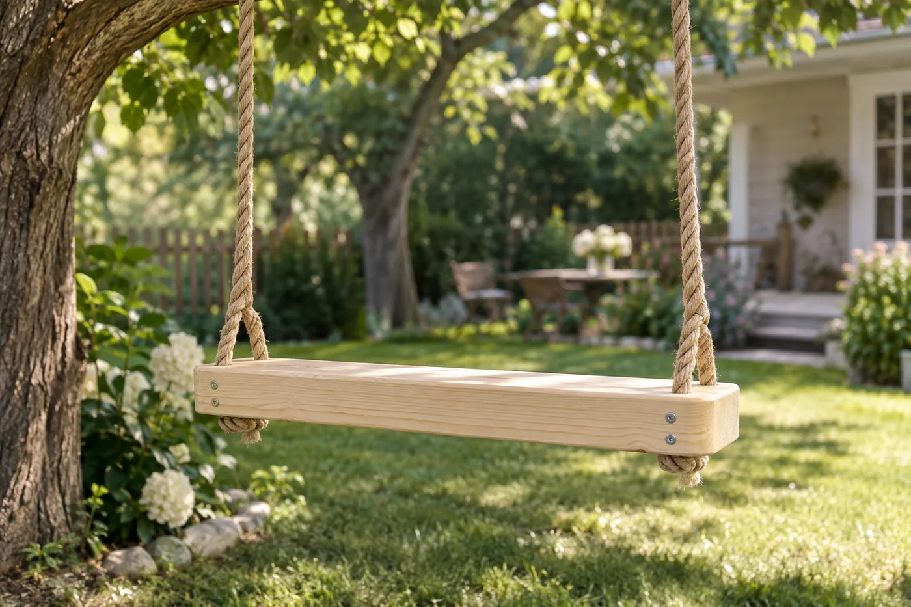
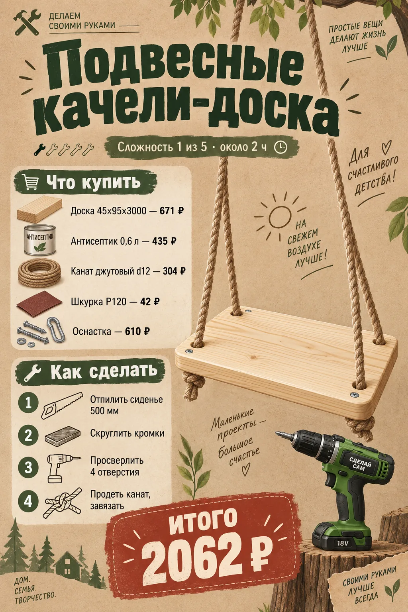
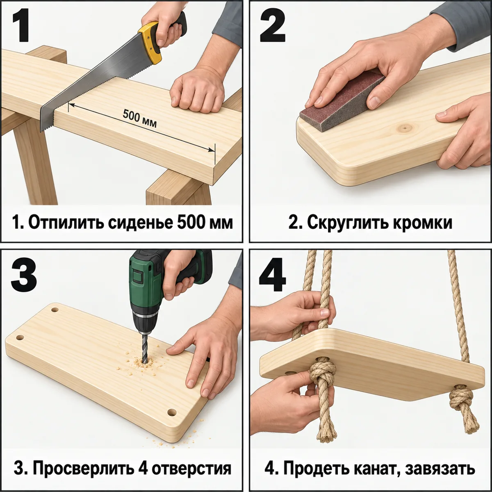
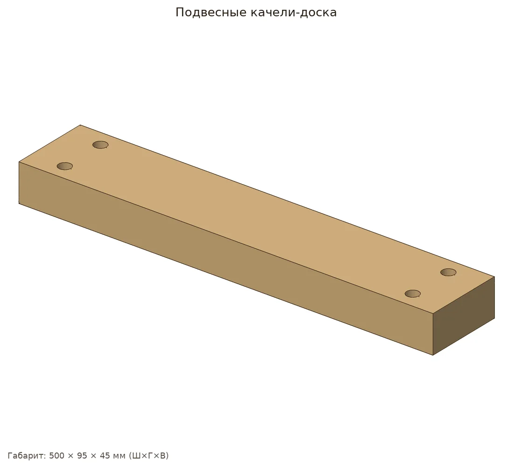
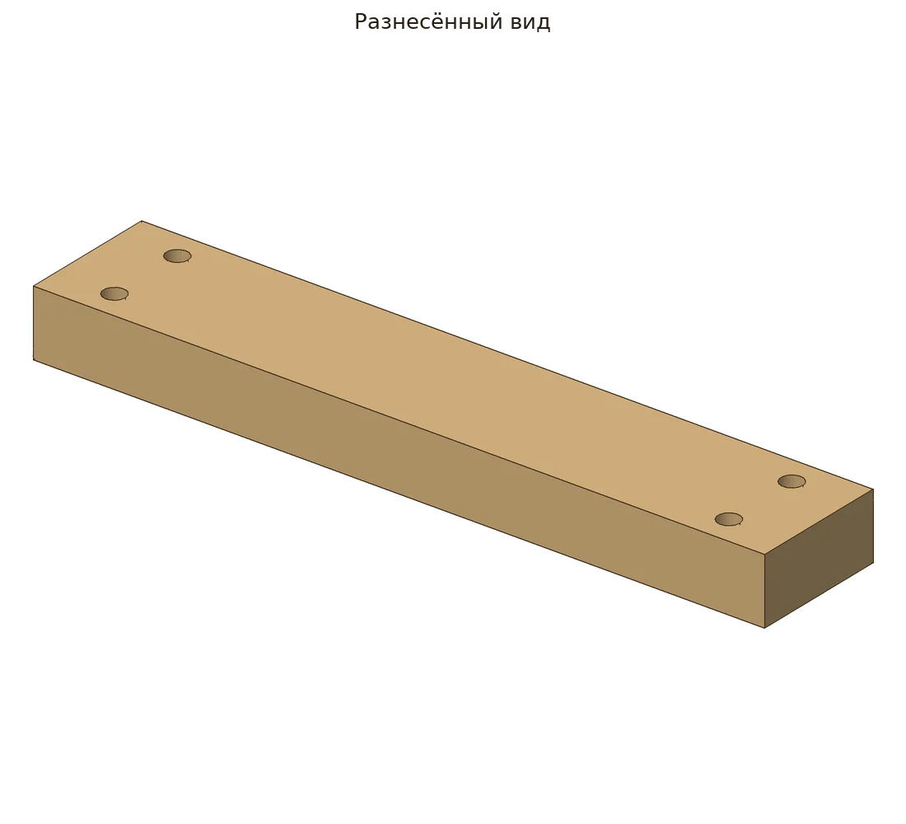
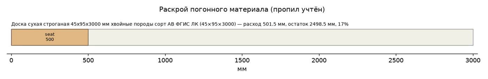
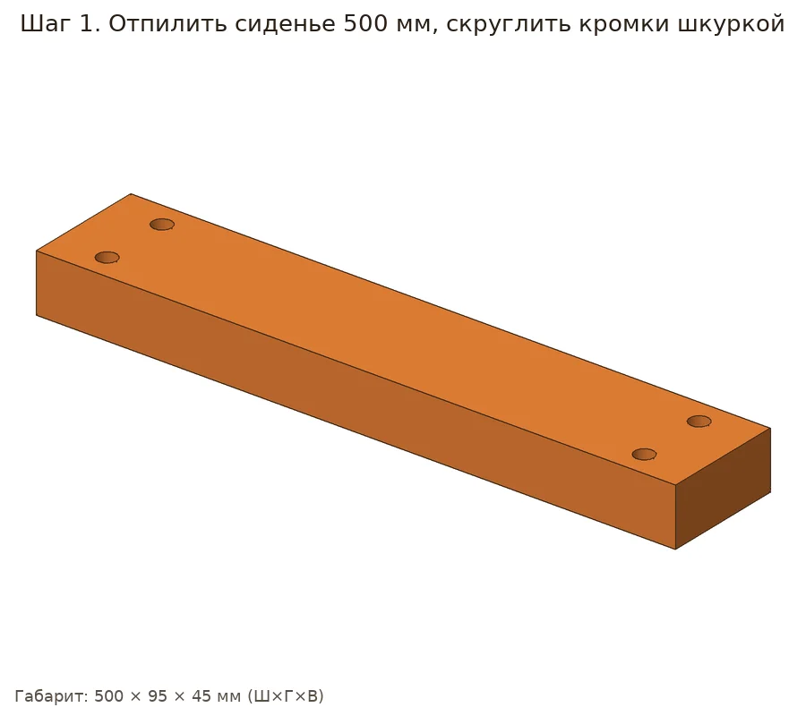
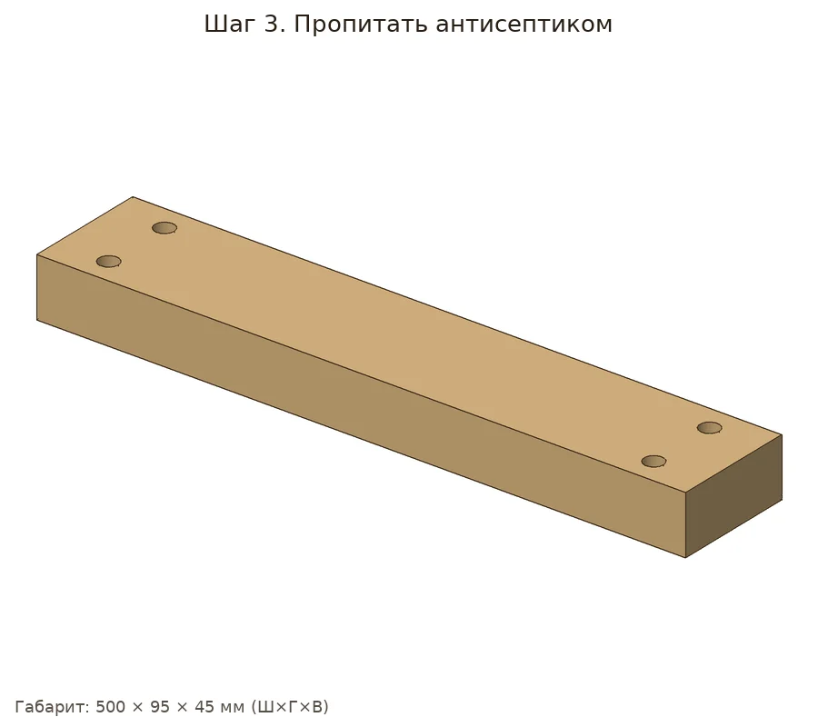
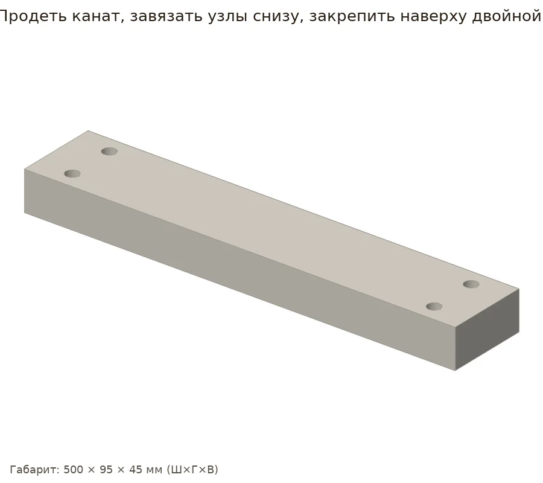

Классические качели на ветку или турник: толстая доска и джутовый канат d12.


| Позиция | Зачем | Кол-во | Цена | Сумма |
|---|---|---|---|---|
| материал | ||||
| Доска 45×95×3000 Доска сухая строганая 45х95х3000 мм хвойные породы сорт АВ ФГИС ЛК · арт. 1224118 |
доска 45×95×3000 | 1 шт | 671 ₽ | 671 ₽ |
| Канат джутовый d12 Канат крученый джутовый 3 пряди d12 мм · арт. 103166 |
канат джут d12, 8 м | 8 пог. м | 38 ₽ | 304 ₽ |
| отделка | ||||
| Антисептик 0,6 л Антисептик Dali универсальный биозащитный 0,6 л бесцветный · арт. 1098347 |
антисептик | 1 шт | 435 ₽ | 435 ₽ |
| расходник | ||||
| Карандаш Карандаш строительный малярный Hesler (2 шт.) · арт. 125418 |
карандаш | 1 упак | 30 ₽ | 30 ₽ |
| Шкурка P120 Наждачная бумага Flexione 230х280 мм Р120 влагостойкая · арт. 691898 |
шкурка P120 | 2 шт | 42 ₽ | 84 ₽ |
| Шкурка P80 Наждачная бумага Flexione 230х280 мм Р80 влагостойкая · арт. 691896 |
шкурка P80 | 1 шт | 42 ₽ | 42 ₽ |
| оснастка | ||||
| Бита PH2 Бита Hesler PH2 магнитная 25 мм (882083) · арт. 882083 |
бита PH2 под саморезы | 1 шт | 33 ₽ | 33 ₽ |
| Сверло 3 мм Сверло по дереву спиральное КМ 3х60 мм (966064) · арт. 966064 |
сверло 3 мм: засверловка, чтобы доска не треснула | 1 шт | 42 ₽ | 42 ₽ |
| Ножовка по дереву Ножовка по дереву 400 мм 9 зуб/дюйм средний зуб · арт. 681543 |
ножовка по дереву | 1 шт | 226 ₽ | 226 ₽ |
| Стусло Стусло Сибртех пластиковое 300х65 мм (22571) · арт. 968520 |
стусло: ровный рез 90° и 45° | 1 шт | 143 ₽ | 143 ₽ |
| Рулетка Рулетка с фиксатором 3 м x 16 мм · арт. 159373 |
рулетка | 1 шт | 99 ₽ | 99 ₽ |
| Сверло перьевое 15 Сверло по дереву перьевое КМ 15х152 мм (966063) · арт. 966063 |
сверло перьевое 15 мм | 1 шт | 112 ₽ | 112 ₽ |
| Итого, включая оснастку 655 ₽ | 2221 ₽ | |||
Источник идеи: https://lifehacker.ru/kacheli-svoimi-rukami/. Проект переработан под шуруповёрт 12 В и ручной инструмент.
Параметрическая 3D-модель с настоящими отверстиями, крепёж расставлен по правилам (Eurocode 5, упрощённо для DIY), раскрой с учётом пропила, закупка упаковками. Габарит модели 500×95×45 мм, масса ≈2.24 кг. Прочность не рассчитывалась.






| Соединение | Крепёж | Шт. | Заход | Пилот |
|---|
Доска сухая строганая 45х95х3000: 501.5 мм
Канат крученый джутовый d12: 8 м
Шкурка P120: ≈0.42 лист
Антисептик: ≈0.03 л
| Тип | Позиция | Кол-во | Сумма |
|---|---|---|---|
| материал | Доска сухая строганая 45х95х3000 мм хвойные породы сорт АВ ФГИС ЛКраскрой: 1 заготовка по 3000 мм | 1 шт | 671 ₽ |
| материал | Канат крученый джутовый 3 пряди d12 ммнужно 8.0 м | 8 пог. м | 304 ₽ |
| расходник | Наждачная бумага Flexione 230х280 мм Р120 влагостойкая≈0.42 листа | 1 шт | 42 ₽ |
| отделка | Антисептик Dali универсальный биозащитный 0,6 л бесцветныйнужно ≈0.025 л | 1 шт | 435 ₽ |
| оснастка | Сверло по дереву перьевое КМ 15х152 мм (966063)seat | 1 шт | 112 ₽ |
| оснастка | Ножовка по дереву 400 мм 9 зуб/дюйм средний зубраскрой | 1 шт | 226 ₽ |
| оснастка | Стусло Сибртех пластиковое 300х65 мм (22571)ровные торцы 90°/45° | 1 шт | 143 ₽ |
| оснастка | Рулетка с фиксатором 3 м x 16 ммразметка | 1 шт | 99 ₽ |
| оснастка | Карандаш строительный малярный Hesler (2 шт.)разметка | 1 упак | 30 ₽ |